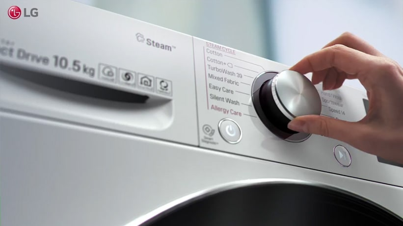
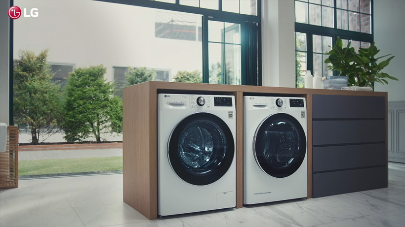

Lavadora estándar
¿Te gusta lo sencillo y fiable? Esta puede ser su elección perfecta de lavadora


De aspecto y funcionalidad clásicos, ejecutan eficazmente las funciones principales de una lavadora.
Lavadora secadora
Esta versión combinada es la opción más popular con diferencia
Opta por una multiuso que ahorra espacio. De aspecto minimalista, sus funciones presentan una solución todo en uno
INFORMACIÓN SOBRE EL TAMAÑO
Cuidado suave de los tejidos para dañarlos lo menos posible
*Las imágenes del producto en la imagen y el vídeo son sólo para fines ilustrativos y pueden diferir del producto real.
*Testado por Intertek en marzo de 2019. Ciclo de algodón con 2kg de ropa interior comparado con el ciclo de algodón convencional de LG(F4V9RWP2W vs FC1450S2W). Los resultados pueden ser diferentes dependiendo de la ropa y el entorno.
*AI DD está disponible en 3 ciclos.(Algodón, Tejido Mixto, Cuidado Fácil)
Ahorro de tiempo
*Las imágenes del producto en la imagen y el vídeo son sólo para fines ilustrativos y pueden diferir del producto real.
*Testado por Intertek, basado en IEC 60456 : edición 5.0. Ciclo TurboWash39 con 5kg de carga IEC comparado con Ciclo Convencional de Algodón con TurboWash (F4V9RWP2W vs. FC1450S2W). Los resultados pueden ser diferentes en función del entorno.
Higiene

*Las imágenes del producto en la imagen y el vídeo son sólo para fines ilustrativos y pueden diferir del producto real.
*Testado por Intertek en diciembre de 2018 según la norma AATCC. Ciclo de algodón con la opción Wrinkle Care"" (3 camisas mixtas) comparado con el ciclo de algodón sin opción. Los resultados pueden ser diferentes según la ropa y el entorno.
*La función Wrinkle Care está disponible opcionalmente en 6 ciclos."
*(Bacterias: estudio del 04-05-2020 elaborado por TUV SUD que confirma que la utilización del programa AllergyCare de los modelos LG F4V9RWP2W y F4V9RCP2W en prendas de algodón de 30x20cm en las cuales se han incluido muestras de bacterias (1.7x105 de staphylococcusaureus, 4.7x105 de klebsiellapneumoniae y 2.1x105 de pseudonomas aeruginosa) ha eliminado hasta un 99.99% de las muestras de las referidas bacterias. Alérgenos y ácaros de polvo: certificado por The British Allergy Foundation en abril de 2020 que confirma que la utilización de la lavadora LG FH4B3PDYK6N, así como el resto de modelos de lavadoras y lava-secadoras LG que tengan las mismas especificaciones que el anterior modelo reducen hasta el 99.99% de los ácaros de polvo, polen, alérgenos y bacterias de sus prendas.)
Funciones inteligentes/AI

*Google y Google Home son marcas comerciales de Google LLC.
*Amazon, Alexa, Echo y todos los logotipos y marcas de movimiento relacionados son marcas comerciales de Amazon.com, Inc o sus filiales.
*LG SmartThinQ pasa a llamarse LG ThinQ.
*Las funciones inteligentes y el asistente de voz del producto pueden variar según el país y el modelo. Consulta con tu distribuidor local o con LG la disponibilidad del servicio.
*El dispositivo de altavoz inteligente habilitado para voz no está incluido.
*El vídeo del producto puede diferir del producto real.
*El control por voz solo se activa cuando la lavadora está encendida.
Dosificación automática de detergente
*Las imágenes del producto en la imagen y el vídeo son sólo para fines ilustrativos y pueden diferir del producto real.
*Lava hasta 20 veces con nivel de dosificación normal (carga de 5 kg). Testado por el laboratorio interno de LG. Ciclo de algodón con nivel de detergente Normal".
*Lavado de hasta 35 cargas utilizando ambos compartimentos de detergente y suavizante como detergente. Testado por el laboratorio interno de LG. Los resultados pueden variar según el entorno".
-
BlancoLa elección tradicional. No puede equivocarse con un electrodoméstico blanco
El blanco es limpio, higiénico y combina bien con los demás electrodomésticos de la casa.
-
InoxUn color que combina bien con cualquier interior, ambiente o aspecto de la cocina.
El plateado combina bien con varios colores y estilos de interior.
-
NegroEl negro nunca pasa de moda
Las superficies negras mate son menos propensas a dejar huellas por el uso frecuente.